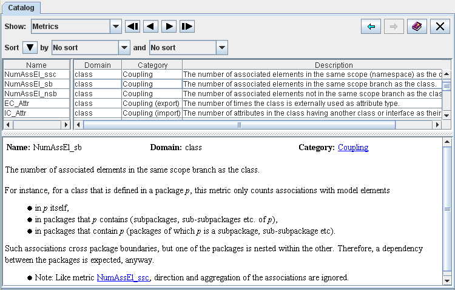

and
and  arrows in the upper right corner of the catalog view to
move back and forth within the previously visited definitions.
arrows in the upper right corner of the catalog view to
move back and forth within the previously visited definitions.| Prev - Next - Down | SDMetrics - the UML design measurement tool |

Figure 21: The View 'Catalog'
Selecting tables
From the dropdown list at the top of the catalog, you can select the following items to explore:
Click any row in the table to see a detailed description of the selected item in the lower part of the window.
The detailed descriptions often contain cross-references to other
metrics, rules, or matrices, include literature references, or
reference terms from the glossary. These references are hyperlinks that
take you to the full definition of the referenced item.
Use the and arrows in the upper right corner of the catalog view to
move back and forth within the previously visited definitions.
Sorting tables
You can sort each table by its columns, e.g., to quickly find all metrics for a particular domain, all rules of certain severity level, and so on. Section 4.3.1 "Common controls in views" describes how to sort tables.
| Prev | Up | Next |
| Section 4.12 "The View 'Model'" | Contents | Section 4.14 "The View 'Log'" |